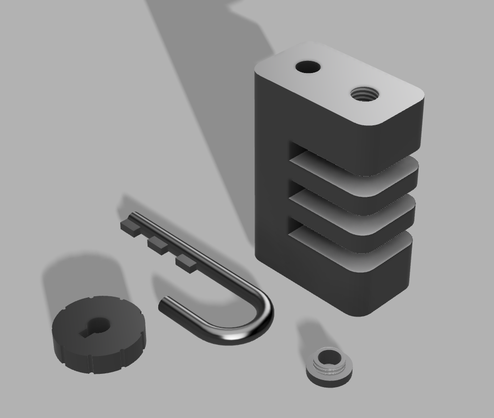
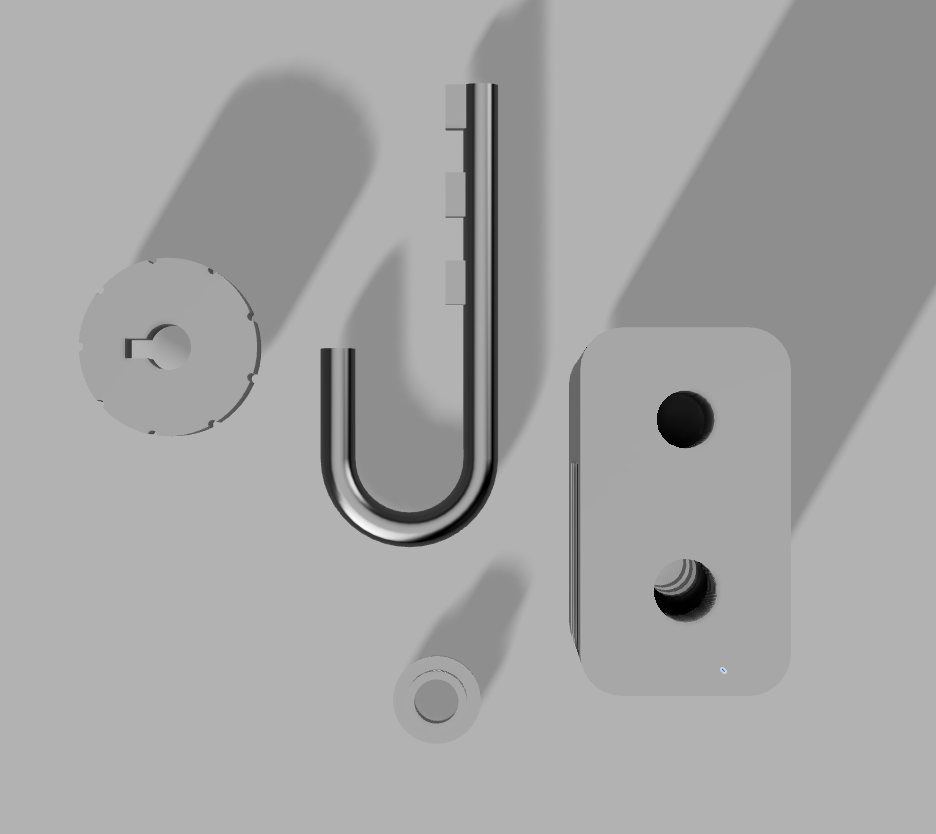
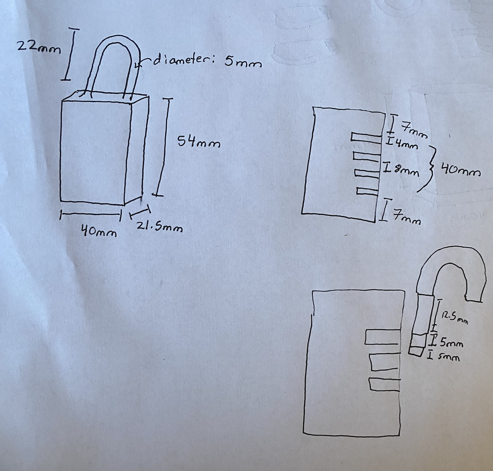

My challenge for this week was to make a combination lock with CAD. I have always been interested in locking mechanisms and decided to put my Fusion 360 skills to the test this week. I looked up different locking mechanisms and settled on the combination lock as one that would be easy to model in CAD. I made sure to use lots of parameters in case I needed to change anything later on – which proved to be a good decision (phew!).

A CAD rendering of my combination lock system.

A bird's eye view of the system.

Hand-drawn schematics.
I learned a lot about gear modulus and gear ratios in the planetary gear system.
My first iteration of the clock used cardboard gears.
I initially designed the gear sizes so there would be a 12:1 reduction in speed between my minutes and hours hands
(to create a working clock). I quickly realized that this was pushing the limits of what was possible,
since there was very little clearance between my planet gears.
I decided to go with smaller planetary gears and a larger sun gear as seen in the image above.
Of course, this means that the clock is no longer accurate, but we can pretend it measures dog years or something like that.
Intial design with wooden gears. I needed to drive the motor quite hard to overcome the friction between gears.
Adding in a cardboard clock hand, I was able to make the clock alternate directions using a potentiometer setup.
I opted for an open clock back to reduce the friction between the gears and the back face. This allowed me to drive the motor a lot slower without the gears locking up. I also decided it was time to make cosmetic edits like laser cutting a holder for the clock and making the hands look more elegant. Now that we were in 3D printing week, I also printed a new axle for the center of the clock and spacers to lift the clock hands above the bolts that bind the clock together. My final product is shown below.
Final product:
The final product — my completed planetary gear clock mechanism.